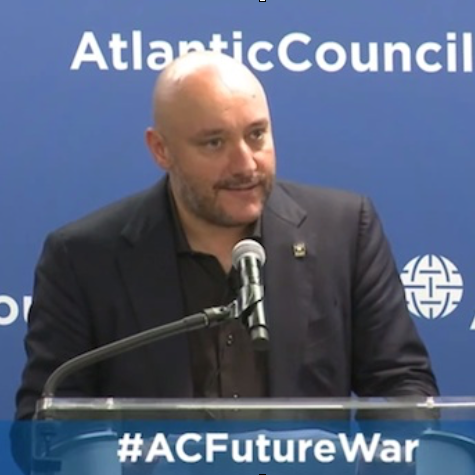
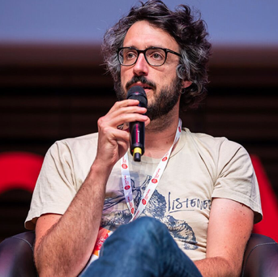

Turning passive news readers into active newsgamers
NewsGamer is an immersive narrative tool to simulate real-life political conflicts and tell complex stories.
Learn More Sign up now
Play the news
In NewsGamer the Player is catapulted into the headlines. S/he leads a nation and has to tackle the political crisis of the day. NewsGamer provides an in-depth learning process leading to a better understanding of the drivers of conflict, policy options, and their consequences.
Choose sides - replay stories from different angles
You can pick your sides and political preferences to define what success and impact mean to you.
Make bold decisions
The fate of your country is in your hands. Learn to utilize the policy toolkit: dispatch diplomats or your military, initiate peace talks, launch covert operations, impose sanctions, provide aid. The choices impacting the lives of millions are all yours.
Deal with unexpected events and learn to manage complexity
Your advisors pulling you into different directions? Extreme weather wreaking havoc, draining your budget? Terrorist attacks derailing peace talks? Welcome to the complexities and unpredictability of real-life political decision-making.

Face the consequences
Your choices will not only determine the fate of your country, but your own political future. Discover the trade-offs in politics, the complexities of stakeholder and constituency management, the consequences of bold decisions or vacillations.
Create your own story
Through NewsGamer’s user-friendly editor interface react to the headlines quickly. Create playable stories in just a few hours without coding or design skills needed.
Multiply your impact
Integrate NewsGamer’s platform into your online presence. Run stories under your own brand and link it to your newsfeed. Boost your social media engagement with immersive and shareable content. NewsGamer provides multilingual support and is easily tweakable to generate content in any language.
Our team
Our advisors
Dave
Anthony

A writer, director and producer, Anthony is best known for his pioneering work on the blockbuster "Call of Duty" video game franchise.
Born in Liverpool, England, Anthony received a first class Bachelor of Science honors degree from Lancaster University in Computer Science, majoring in Artificial Intelligence and Natural Language Processing.
He moved to Los Angeles in 2004 and produced "Call of Duty" for Sony PlayStation and Microsoft Xbox. In 2010, he directed and wrote the screenplay of "Call of Duty: Black Ops". In 2012, the sequel "Call of Duty: Black Ops II" which he also wrote and directed, grossed $1 billion in just fifteen days, breaking the world record as the fastest billion dollar gross in the history of entertainment. In 2018, Black Ops 4 smashed records to become the industry's fastest selling digital game in PlayStation history.
In addition to working with many senior military experts and veterans including Lt. Colonel Oliver North, he has directed many A-list celebrities such as Ed Harris, Gary Oldman, Sam Worthington, Kiefer Sutherland, Michael Keaton, Jimmy Kimmel and Evangeline Lilly.
In 2014 Anthony formed Prisoner Six Productions, a Los Angeles based production company developing both TV and movie projects. In October 2014 he was invited to become a Senior Fellow at the Atlantic Council, a distinguished Washington DC think tank.
daveanthony.com
Jan
Roessner
Jan Roessner, CEO and Co-Founder of video game company Arcade Distillery and Co-Founder at mTw Gaming Inc.
He began his career as an officer in the German military, leading operations in a helicopter squadron, maintaining political and international relations, and overseeing training programs. After leaving military service in 2012, Jan founded the marketing firm sagency in Berlin, with a focus on online marketing. Following early success, sagency expanded in 2013, opening offices in New York City to pursue business opportunities in North America and extend the agency's reach globally. In 2015, Jan decided to pursue his personal passion for video games, founding Arcade Distillery with Luc Bernard. Under Jan's leadership, the studio has successfully launched four games on a broad range of platforms (including PlayStation Vita, PlayStation 4, Nintendo Switch and PC), developed licensed projects for a variety of partners, and has plans to pursue new games promoting social advocacy. With mTw, Jan has successfully expanded his activities into eSports.
John T.
Watts
John T. Watts is a Nonresident Senior Fellow at the Atlantic Council's Scowcroft Center for Strategy and Security.
Watts has spent more than a decade and a half working across military, government, and industry, focused predominantly on the nature of future warfare and implications of complex emerging security risks. At the Atlantic Council, he has created the Emergent Futures Lab to develop new insights into future threats by combining experimental approaches and non-traditional perspectives with established expertise. Through the Lab, he has led war-games on Baltic and Middle East security issues, defeating ISIS and developing new military concepts. He has also led research efforts on disinformation, Indo-pacific security and alternate futures resulting from technology adoption.
Florent
Maurin

Florent is founder of The Pixel Hunt, a gamedev studio with a focus on reality-inspired games.
Florent graduated from Lille's journalism school in France, and has worked as a journalist for more than ten years. Bury me, my Love, The Pixel Hunt's first independent game, was co-produced with Figs and Arte.
Bernat
Ivancsics
Bernat Ivancsics is a business and data journalist, currently a PhD candidate at the Columbia Journalism School.
Bernat focuses on the emergent trends of computational journalism and the social history of public records in the United States.